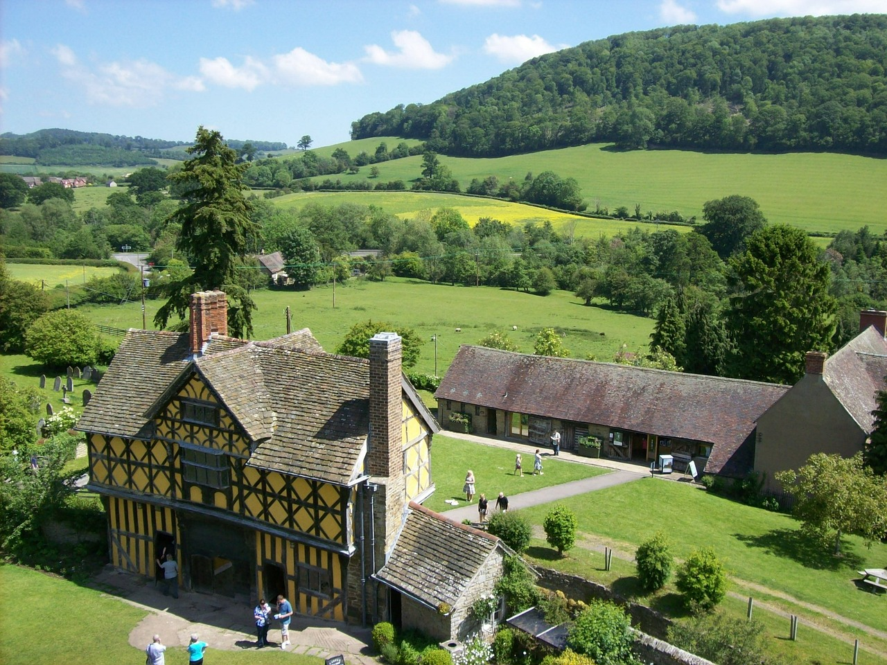

Wielka Brytania
🇬🇧 - to jedno z najchętniej odwiedzanych miejsc na świecie. Choć większość turystów skupia się na Londynie (co zrozumiałe, bo to niesamowite miasto!), reszta kraju oferuje równie wiele atrakcji, a przy tym przyciąga znacznie mniej tłumów.
Podróżowanie po Anglii, zwłaszcza z plecakiem, było jednym z najciekawszych etapów mojej wyprawy po Europie.
Mniejsze miasta, takie jak Bath czy Oxford, zachwycają bogatą kulturą i historią. Są też mniej zatłoczone niż Londyn, co czyni je bardziej przyjaznymi dla portfela. Liverpool, znany jako miejsce narodzin The Beatles, oferuje fascynującą podróż przez muzyczną historię. Natomiast angielska wieś kusi pięknymi krajobrazami, zabytkowymi posiadłościami i spokojem. Warto również zobaczyć północne góry, wzgórza w Lancaster i Kornwalii, Stonehenge, Mur Hadriana czy zabytkowe miasta w stylu Tudorów, takie jak Chester.
Jest tu mnóstwo do odkrycia! Oto kilka pomysłów, jak zaplanować podróż, zaoszczędzić pieniądze i w pełni wykorzystać czas spędzony w Anglii.
Top 5 rzeczy do zobaczenia i zrobienia w Wielkiej Brytanii

1. Zwiedzaj Londyn
Londyn to punkt obowiązkowy dla każdego, kto odwiedza Anglię. To jedno z najbardziej znanych miast na świecie, oferujące niezliczone atrakcje: od tradycyjnych pubów i światowej klasy muzeów, przez fascynującą historię, po wyśmienite jedzenie i tętniące życiem nocne kluby. Chociaż Londyn może być drogi, jest tu mnóstwo darmowych atrakcji, takich jak parki, targi czy muzea. Warto też wziąć udział w bezpłatnych spacerach z przewodnikiem, aby poznać miasto od innej strony.
2. Odkrywaj nadmorskie miasteczka
Angielska linia brzegowa oferuje idealne miejsce na wypoczynek, zwłaszcza jeśli masz samochód. Najbardziej znanym celem jest Brighton, które słynie z letnich festiwali i imprez. Jednak warto również odwiedzić takie miejsca jak Weymouth, Salcombe, Dover, Hastings, St Ives czy Newquay. Każde z nich ma swój niepowtarzalny urok, od brukowanych uliczek i tradycyjnych domów w stylu Tudorów po rozrywki na wesołym miasteczku (jak słynne molo w Brighton).
3. Zobacz Kornwalię
Kornwalia przypomina nieco amerykańską Nową Anglię — nietrudno zrozumieć, dlaczego pierwsi osadnicy z Wysp czuli się tam jak w domu. Region ten zachwyca malowniczymi wzgórzami, małymi miasteczkami, winnicami, szlakami turystycznymi i wioskami rybackimi. Kornwalia ma bogatą historię, sięgającą epoki neolitu i brązu, a także silne związki z celtycką kulturą. Spokojna atmosfera tego miejsca sprawia, że jest to jedno z najprzyjemniejszych miejsc w Anglii.
4. Odwiedz Bath
Bath to miasto, którego nazwa pochodzi od starożytnych rzymskich łaźni, doskonale zachowanych do dziś. Powstały w I wieku n.e. i były używane przez ponad 400 lat. Łaźnie to główna atrakcja miasta, ale warto też zobaczyć katedrę, eleganckie budynki w stylu georgiańskim i wiktoriańskim oraz malowniczą rzekę. Miłośnicy literatury mogą odkryć związki Bath z Jane Austen, która spędziła tu część swojego życia.
5. Zwiedz Krainę Jezior
Lake District, czyli Kraina Jezior, znajduje się w północno-zachodniej Anglii, niedaleko granicy ze Szkocją. To miejsce, gdzie powstał jeden z najpiękniejszych parków narodowych w Anglii. Jeziora, które dały nazwę regionowi, są wynikiem cofania się lodowców podczas ostatniej epoki lodowcowej. To idealne miejsce na piesze wędrówki, podziwianie górskich krajobrazów i rejsy po krystalicznych wodach. Latem przyciąga wielu turystów, ale jego naturalne piękno sprawia, że jest to obowiązkowy punkt podróży po Anglii.
1. Odwiedz Pałac Buckingham
Pałac Buckingham, oficjalna rezydencja brytyjskiej monarchini, to jedno z najbardziej rozpoznawalnych miejsc w Londynie. Pałac jest otwarty dla zwiedzających tylko latem. Jeśli nie planujesz wejścia do środka, warto obejrzeć uroczystą zmianę warty, która odbywa się cztery razy w tygodniu (w poniedziałki, środy, piątki i niedziele) o godzinie 11:00. Wstęp do pałacu kosztuje 30 GBP przy zakupie online (33 GBP na miejscu), a ekskluzywne wycieczki z przewodnikiem to koszt 90 GBP. Aktualne informacje o wydarzeniach można znaleźć na stronie Royal Collection Trust.
2. Zwiedź Tower Of London
Tower of London, zbudowana w 1070 roku, była na przestrzeni wieków wielokrotnie rozbudowywana. Ta średniowieczna forteca służyła jako pałac, więzienie, a nawet mennicę. Dziś jest domem dla klejnotów koronnych i legendarnych czarnych kruków. Warto także zobaczyć słynnych strażników, znanych jako Beefeaters. Na miejscu można spacerować po murach obronnych i odkrywać odtworzone wnętrza królewskich apartamentów. Bilety wstępu kosztują 29,90 GBP, a kolejki bywają długie, dlatego lepiej zarezerwować je z wyprzedzeniem.
3. Zrelaksuj się w Brighton
Brighton to urocze nadmorskie miasto położone na południowym wybrzeżu Anglii, idealne na weekendowy wypad. Słynie z artystycznej, bohemy atmosfery i jest jednym z najbardziej przyjaznych miast dla społeczności LGBTQ w Wielkiej Brytanii. Latem Brighton przyciąga mieszkańców, którzy chcą odpocząć na plaży, spacerować po molo pełnym atrakcji, gier i stoisk z jedzeniem ulicznym, a także cieszyć się letnim słońcem.
4. Odkryj muzyczną stronę Liverpoolu
Liverpool to miasto, które zapisało się na muzycznej mapie świata jako miejsce narodzin The Beatles. Wizyta w muzeum The Beatles Story to obowiązkowy punkt programu dla każdego fana tej legendarnej grupy. Poza tym miasto oferuje bogatą historię, kulturę, świetne muzea i klimatyczne puby, które warto odwiedzić. Liverpool to prawdziwa stolica muzyki popularnej.
5. Zobacz Chatsworth House
Chatsworth House w hrabstwie Derbyshire to imponująca rezydencja zbudowana w 1549 roku dla księcia i księżnej Devonshire. To jedna z najpiękniejszych posiadłości w Wielkiej Brytanii, która zyskała sławę dzięki swojej roli w filmach i serialach, takich jak “Peaky Blinders”, “Jane Eyre” czy “Duma i uprzedzenie”. Można tu zwiedzać 25 eleganckich sal, spacerować po 105-hektarowych ogrodach oraz odwiedzić farmę z działającym gospodarstwem. Wstęp do domu i ogrodów kosztuje 26 GBP, a samo zwiedzanie ogrodów – 15 GBP.
6. Zwiedzaj Uniwersytet w Oksfordzie
Uniwersytet Oksfordzki, założony w XI wieku, to jeden z najstarszych ośrodków akademickich na świecie. Można zwiedzać poszczególne kolegia za niewielką opłatą lub wybrać się na 90-120-minutową wycieczkę z przewodnikiem (koszt 20 GBP). Niektóre budynki uniwersytetu posłużyły jako plan filmowy do serii o Harrym Potterze, co przyciąga fanów tej sagi. Miłośnicy sztuki powinni odwiedzić darmowe Ashmolean Museum, gdzie znajdują się bogate zbiory sztuki starożytnej, w tym egipskiej i wschodniej.
Podróżowanie po Anglii może mocno obciążyć budżet, zwłaszcza jeśli planujesz zatrzymać się w większych miastach. Londyn, będący jednym z najdroższych miast na świecie, może być aż o 30% droższy niż inne części kraju. Na szczęście istnieje wiele sposobów na ograniczenie wydatków, jeśli odpowiednio zaplanujesz swoją podróż. Oto kilka wskazówek, jak zaoszczędzić pieniądze podczas wizyty w Anglii:
1. Zabierz wielorazową butelkę na wodę
Woda z kranu w Anglii jest w pełni zdatna do picia, więc warto mieć ze sobą wielorazową butelkę. Dzięki temu zaoszczędzisz na kupnie wody butelkowanej i zmniejszysz ilość zużywanego plastiku. Butelki z wbudowanym filtrem, takie jak LifeStraw, to świetne rozwiązanie, ponieważ zapewniają czystość wody w każdej sytuacji.
2. Korzystaj z darmowych muzeów
W wielu miastach w Anglii, a także w całej Wielkiej Brytanii, publiczne muzea oferują bezpłatny wstęp. To doskonała okazja, by poznać kulturę i historię tego kraju, podziwiać dzieła znanych artystów czy spędzić deszczowy dzień w ciekawy sposób, nie wydając pieniędzy.
3. Rezerwuj transport z wyprzedzeniem
Planowanie podróży z wyprzedzeniem pozwala zaoszczędzić sporo pieniędzy na transporcie. Kupując bilety wcześniej, można znaleźć oferty już od 2 GBP. Megabus to doskonała opcja dla podróżujących oszczędnie – obsługuje zarówno autobusy, jak i pociągi, oferując tani sposób przemieszczania się po kraju.
4. Skorzystaj z karty Taste of the UK
Taste of the UK to karta, która daje zniżki do 50% oraz oferty typu 2 za 1 w wybranych restauracjach. Karta jest dostępna również dla turystów, a pierwszy miesiąc użytkowania jest darmowy, co idealnie sprawdza się podczas krótkich wizyt w kraju.
5. Zjedz w pubie
Jedzenie w Anglii może być kosztowne, ale puby oferują smaczne, sycące posiłki w przystępnych cenach. Za około 10-15 GBP można zjeść porządny obiad i poczuć klimat lokalnej społeczności. To również świetne miejsce, by poznać nowych ludzi!
6. Wybierz darmowe spacery z przewodnikiem
Większość większych miast w Anglii organizuje bezpłatne wycieczki piesze. Trwają one zazwyczaj kilka godzin i pozwalają odkryć miasto oraz jego historię. Niektóre trasy koncentrują się na konkretnych tematach, takich jak architektura czy kulinaria. Pamiętaj jednak, aby wynagrodzić przewodnika napiwkiem.
7. Korzystaj z ofert lunchowych
Dobrym sposobem na oszczędzanie na jedzeniu jest jedzenie w restauracjach w porze lunchu, gdy często oferowane są specjalne zestawy w niższych cenach. Kolację można przygotować samodzielnie, co pozwala jeszcze bardziej zmniejszyć wydatki na posiłki.
8. Wykorzystaj karty turystyczne w Londynie
Jeśli planujesz intensywne zwiedzanie Londynu, warto rozważyć zakup karty turystycznej. London Pass oferuje wstęp do ponad 80 atrakcji w ramach różnych pakietów czasowych (od 1 do 10 dni). Inne opcje to London City Pass lub London Sightseeing Pass, które mogą obejmować również transport publiczny. Porównaj dostępne oferty, aby znaleźć najlepszą opcję dla siebie.
Dzięki tym prostym wskazówkom możesz jeszcze bardziej cieszyć się swoją podróżą po Wielkiej Brytanii, nie martwiąc się o budżet!
1. Środki transportu publicznego
Transport publiczny w Anglii jest bardzo dobrze rozwinięty i obejmuje autobusy, tramwaje oraz pociągi w niemal każdym mieście i miasteczku. Najbardziej opłacalnym rozwiązaniem jest zakup karty podróżnej, która pozwala zaoszczędzić w porównaniu do biletów jednorazowych. Przykładowo, w Londynie za przejazd metrem w Strefie 1 zapłacisz 6,30 GBP, ale z Visitor Oyster Card koszt spada do 2,50 GBP za jeden przejazd.
2. Autobusy
Najbardziej ekonomicznym środkiem transportu w Anglii są autobusy. W Megabus bilety można znaleźć już od 1 GBP, pod warunkiem, że rezerwujesz z wyprzedzeniem – najlepiej około miesiąca wcześniej. Nawet jeśli przegapisz promocję, bilety rzadko kosztują więcej niż 10-15 GBP. Flixbus to również świetna opcja, z cenami zaczynającymi się od 3 GBP.
Kolejnym dużym przewoźnikiem jest National Express, który oferuje karty rabatowe dla studentów i osób poniżej 26. roku życia. Karta kosztuje 12,50 GBP i zapewnia zniżki na poziomie 30% lub więcej
3. Pociągi
Podróże pociągami w Wielkiej Brytanii są kosztowne, co jest częstym źródłem frustracji mieszkańców. Ceny biletów na trasie z Londynu do Liverpoolu mogą wynosić od 25 GBP do nawet 150 GBP, w zależności od terminu zakupu. Im wcześniej rezerwujesz, tym większa szansa na korzystną cenę.
Wyszukując rozkłady jazdy i ceny, warto skorzystać ze stron takich jak National Rail lub Trainline.
Jeśli planujesz podróż po Europie, bilety Eurail Pass mogą być dobrym rozwiązaniem – pozwalają na podróże w określonej liczbie dni w wyznaczonym okresie.
4. Loty
Podróże lotnicze między miastami w Anglii mogą być opłacalne, jeśli zarezerwujesz bilety wcześniej. Na przykład lot z Londynu do Manchesteru lub Liverpoolu kosztuje około 49 GBP i trwa nieco ponad godzinę. Jednak biorąc pod uwagę czas i koszty dojazdu na lotnisko, pociągi często okazują się szybsze i wygodniejsze na krótszych trasach.
5. Wynajem samochodu
Wynajęcie samochodu w Anglii to dobra opcja, szczególnie jeśli planujesz zwiedzanie mniejszych miejscowości lub obszarów wiejskich. Koszty wynajmu zaczynają się od 20-30 GBP dziennie przy dłuższych rezerwacjach. Warto pamiętać, że w Anglii obowiązuje ruch lewostronny, a większość samochodów ma manualną skrzynię biegów. Minimalny wiek wynajmującego to zazwyczaj 21 lat.
Wielka Brytania to kraj łączący historię, kulturę i piękne krajobrazy. Od zabytków Londynu po malownicze tereny Kornwalii i Lake District, każdy znajdzie tu coś dla siebie. Transport jest dobrze rozwinięty, a planowanie z wyprzedzeniem pozwala zaoszczędzić. Darmowe muzea, puby i lokalne promocje sprawiają, że zwiedzanie jest dostępne dla każdego. Idealne miejsce dla miłośników natury, historii i rozrywki.